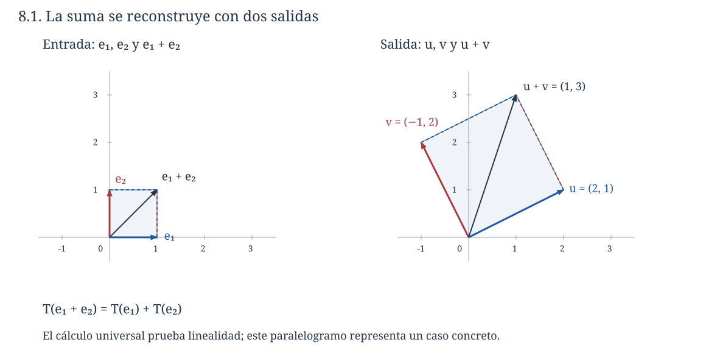
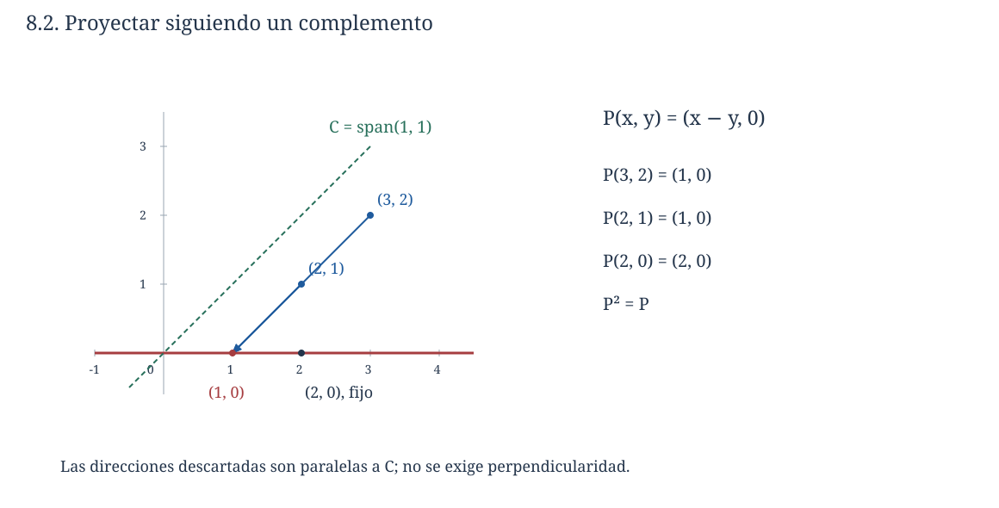
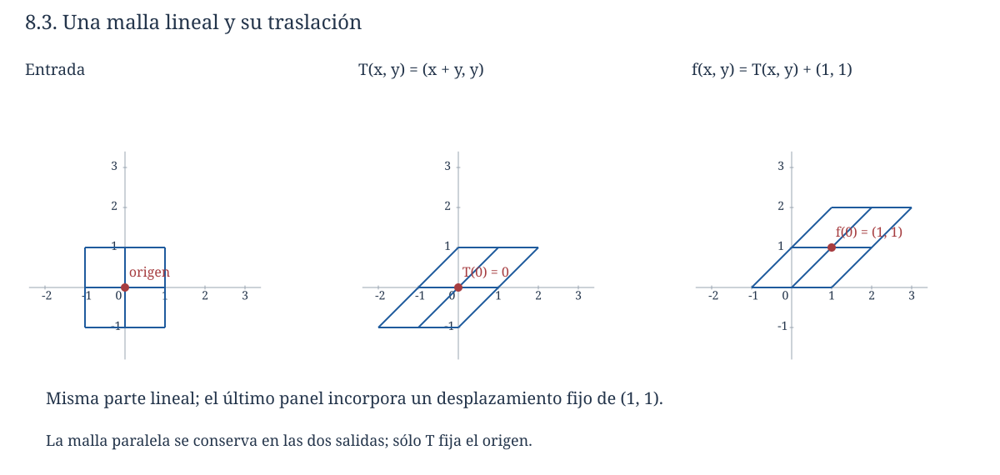

Capítulo 8. Transformaciones lineales
Álgebra para matemáticos · Tomo II
← Capítulo 7 · Índice del tomo II · Obra completa · Capítulo 9 →
Un dispositivo recibe dos señales que podemos ajustar por separado y produce una salida formada por dos números. Al activar únicamente la primera señal con intensidad uno, obtenemos \(u=(2,1)\); al activar únicamente la segunda, obtenemos \(v=(-1,2)\). Si duplicar una señal duplica su contribución y combinar señales suma sus contribuciones, una entrada \((x,y)\) debe producir \(xu+yv=(2x-y,x+2y)\). Dos mediciones determinan entonces la respuesta a cualquier entrada, incluso a intensidades negativas o fraccionarias.
Esas dos mediciones no bastan para demostrar que el dispositivo se comporte así. La regla \(F(x,y)=(2x-y+xy,x+2y)\) coincide con la anterior sobre las dos entradas usuales \((1,0)\) y \((0,1)\), pero en \((1,1)\) produce \((2,3)\) en lugar de \((1,3)\). El término \(xy\) describe una interacción que no se revela cuando una de las señales está apagada. Conocer las respuestas sobre una base determina la transformación completa cuando sabemos que ésta respeta las combinaciones lineales; si todavía no conocemos esa propiedad, las respuestas aisladas sólo son datos parciales.

Trabajaremos con espacios vectoriales sobre un mismo cuerpo \(\mathbb F\). Usaremos las bases y combinaciones de C04–C07 y las operaciones con funciones del tomo I. Los ejemplos numéricos son reales salvo indicación contraria. No se presupone cálculo diferencial: la derivación de polinomios que aparecerá más adelante se definirá mediante sus coeficientes.
8.1. Conservar las combinaciones
Definición 8.1 (transformación lineal). Sean \(V,W\) espacios vectoriales sobre \(\mathbb F\). Una función \(T:V\to W\) es lineal si para todos \(x,y\in V\) y \(a\in\mathbb F\) se cumplen \(T(x+y)=T(x)+T(y)\) y \(T(ax)=aT(x)\). La primera propiedad se llama aditividad y la segunda homogeneidad. Cuando el dominio y el codominio coinciden, hablaremos también de un operador lineal sobre ese espacio.
Las operaciones de entrada se efectúan en \(V\) y las de salida en \(W\); sus vectores pueden ser objetos de clases distintas. La fórmula no exige que \(T\) conserve longitudes, ángulos, productos ni todas las operaciones que podamos definir sobre esos objetos. Exige dos compatibilidades precisas con la estructura vectorial.
La regla de la apertura es lineal porque, al sustituir \(a(x,y)+b(s,t)\), obtenemos
\[ \begin{aligned} T(ax+bs,ay+bt) &=(2ax+2bs-ay-bt,ax+bs+2ay+2bt)\\ &=a(2x-y,x+2y)+b(2s-t,s+2t). \end{aligned} \]
El cálculo tiene coeficientes y entradas arbitrarios. Comprobar la misma igualdad sólo para dos vectores particulares no justificaría los cuantificadores de la definición.
Proposición 8.1 (superposición). Una función \(T:V\to W\) es lineal si y sólo si \(T(ax+by)=aT(x)+bT(y)\) para todos \(x,y\in V\) y \(a,b\in\mathbb F\). En ese caso \(T(0_V)=0_W\), \(T(-x)=-T(x)\) y, para cualquier lista finita de vectores y escalares,
\[ T\left(\sum_{j=1}^r a_jx_j\right)=\sum_{j=1}^r a_jT(x_j). \]
Demostración. Si \(T\) es lineal, primero aplicamos aditividad a \(ax+by\) y después homogeneidad a cada sumando. En sentido contrario, tomar \(a=b=1\) da aditividad; tomar \(b=0\) da homogeneidad, porque \(0T(y)=0_W\).
La aditividad aplicada a \(0_V+0_V\) da \(T(0_V)=T(0_V)+T(0_V)\); al cancelar un sumando en \(W\), obtenemos \(T(0_V)=0_W\). La homogeneidad con escalar \(-1\) da la afirmación sobre opuestos. Para una suma de \(r+1\) términos, separamos el último, usamos aditividad y aplicamos al bloque anterior la fórmula para \(r\) términos. La inducción, comenzando por un término, prueba la fórmula finita. Para la suma vacía, ambos miembros son cero por lo que acabamos de demostrar. \(\square\)
La condición \(T(0)=0\) sirve para descartar muchas funciones, pero no basta para probar linealidad: \(f(x)=x^2\) sobre \(\mathbb R\) lleva cero a cero y, sin embargo, \(f(1+1)=4\ne2=f(1)+f(1)\). Una sola falla basta para refutar la definición, mientras que una prueba positiva debe controlar todos los vectores y escalares.
La función cero \(0_{V,W}:V\to W\), que envía cada vector al cero de \(W\), es lineal porque ambos miembros de las igualdades requeridas son cero. La identidad \(I_V(x)=x\) también lo es porque deja las operaciones intactas. Si el dominio es \(\{0\}\), existe una sola transformación lineal hacia \(W\), pues su valor en cero está obligado. Si el codominio es \(\{0\}\), existe igualmente una sola función y es lineal.
El cuerpo no puede omitirse. La conjugación \(C:\mathbb C\to\mathbb C\), \(C(z)=\overline z\), respeta las sumas y la multiplicación por escalares reales, luego es lineal al considerar \(\mathbb C\) como espacio real. Como transformación de espacios complejos, falla la homogeneidad: \(C(i\cdot1)=-i\), mientras que \(iC(1)=i\). La misma función, con las mismas entradas y salidas, cambia de estatuto cuando cambia el cuerpo de escalares.
8.2. Construir una transformación a partir de una base
La superposición permite recuperar una transformación ya conocida a partir de los valores que toma en una base. Para convertir esa observación en un procedimiento de construcción necesitamos comprobar además que cualquier elección de esos valores produce una función lineal bien definida.
Teorema 8.2 (prescripción sobre una base). Sea \(\mathcal B=(b_1,\ldots,b_n)\) una base de \(V\) y sean \(w_1,\ldots,w_n\) vectores cualesquiera de \(W\). Existe una única transformación lineal \(T:V\to W\) tal que \(T(b_j)=w_j\) para cada \(j\).
Demostración. Cada \(x\in V\) admite una única representación \(x=\sum_j a_jb_j\). Esa unicidad permite definir una función mediante la regla
\[ T(x)=\sum_{j=1}^n a_jw_j. \]
No hemos supuesto que los \(w_j\) sean independientes ni que generen \(W\). Una vez fijados los coeficientes únicos de \(x\), la suma de salida existe en \(W\) aunque algunos de esos vectores sean cero o coincidan entre sí.
Debemos comprobar que la función construida es lineal. Si \(x=\sum_j a_jb_j\) e \(y=\sum_j c_jb_j\), la unicidad de coordenadas identifica los coeficientes de \(\alpha x+\beta y\) como \(\alpha a_j+\beta c_j\). Por la propia regla de construcción,
\[ T(\alpha x+\beta y) =\sum_j(\alpha a_j+\beta c_j)w_j =\alpha T(x)+\beta T(y). \]
La proposición 8.1 prueba la linealidad. Para \(x=b_k\), sus coeficientes son uno en la posición \(k\) y cero en las demás, así que \(T(b_k)=w_k\).
Finalmente, cualquier transformación lineal \(S\) con los valores prescritos debe satisfacer \(S(x)=\sum_j a_jS(b_j)=\sum_j a_jw_j=T(x)\) para todo \(x\). Ésta es igualdad de funciones, lo que demuestra la unicidad. Si la base es vacía, \(V=\{0\}\) y la suma vacía construye la única transformación lineal posible. \(\square\)
Por ejemplo, consideremos la base \(b_1=(1,1)\), \(b_2=(1,-1)\) de \(\mathbb R^2\) y los valores \(T(b_1)=(1,2,0)\), \(T(b_2)=(0,1,1)\). Puesto que \((x,y)=\frac{x+y}{2}b_1+\frac{x-y}{2}b_2\), obtenemos
\[ T(x,y)=\left(\frac{x+y}{2},\frac{3x+y}{2},\frac{x-y}{2}\right). \]
La entrada está en un plano y la salida en un espacio de tres coordenadas. No hay dificultad en cambiar de tipo de objeto: si en la misma base prescribiéramos \(S(b_1)=1+t\) y \(S(b_2)=t^2\), construiríamos la transformación \(S(x,y)=\frac{x+y}{2}(1+t)+\frac{x-y}{2}t^2\) con codominio \(P_2(\mathbb R)\).
En particular, dos transformaciones lineales que coinciden sobre una base coinciden sobre todo el dominio. El argumento funciona incluso con una lista generadora redundante, siempre que ambas funciones sean ya lineales: se expresa cada vector mediante los generadores y se aplica superposición. La cuestión de existencia requiere más cuidado cuando los datos se prescriben sobre una lista dependiente.
8.3. Datos redundantes y compatibilidad
Supongamos que queremos prescribir los valores sobre \(u=(1,0)\), \(v=(0,1)\) y \(z=(1,1)\). Como \(z=u+v\), cualquier transformación lineal debe satisfacer \(T(z)=T(u)+T(v)\). Si elegimos los tres valores libremente podemos violar esa obligación y hacer imposible la construcción. Las relaciones lineales de la entrada imponen las correspondientes relaciones en la salida.
Teorema 8.3 (prescripción sobre generadores). Sea \((v_1,\ldots,v_r)\) una lista que genera \(V\), y fijemos \(w_1,\ldots,w_r\in W\). Existe una transformación lineal \(T:V\to W\) con \(T(v_j)=w_j\) si y sólo si se cumple la siguiente condición para todos los escalares \(a_1,\ldots,a_r\):
\[ \sum_{j=1}^r a_jv_j=0 \quad\Longrightarrow\quad \sum_{j=1}^r a_jw_j=0. \]
Cuando existe, la transformación es única.
Demostración. Si existe \(T\), aplicarla a una relación nula y usar superposición produce exactamente la relación nula de salida. Esto prueba la necesidad.
Supongamos que la condición se cumple. Dado \(x\in V\), elegimos una expresión \(x=\sum_j c_jv_j\) y proponemos \(T(x)=\sum_j c_jw_j\). La generación asegura que existe al menos una expresión, pero la dependencia permite que haya varias. Para que la propuesta defina una función debemos demostrar que todas dan la misma salida. Si también \(x=\sum_j d_jv_j\), entonces \(\sum_j(c_j-d_j)v_j=0\). La hipótesis da \(\sum_j(c_j-d_j)w_j=0\), de modo que las dos sumas de salida coinciden. La regla es, por tanto, independiente de la representación elegida.
Para verificar la linealidad, tomamos representaciones de \(x\) e \(y\); la combinación de sus coeficientes representa a \(\alpha x+\beta y\). Como la regla ya está bien definida, podemos usar esa representación y obtener \(T(\alpha x+\beta y)=\alpha T(x)+\beta T(y)\). Tomar la representación de \(v_j\) con un coeficiente uno y los demás cero da el valor prescrito \(w_j\). La unicidad se sigue de que cualquier transformación lineal con esos valores debe aplicar a cada representación de \(x\) la misma regla de superposición. \(\square\)
La condición pide conservar todas las relaciones. Sobre la lista \(u,v,u+v\) basta comprobar \(w_3=w_1+w_2\), porque cualquier relación de entrada tiene coeficientes \((-c,-c,c)\): las dos entradas de \(au+bv+c(u+v)=0\) fuerzan \(a=b=-c\). Si, por ejemplo, \(w_1=(2,1)\) y \(w_2=(-1,2)\), la única elección compatible para \(w_3\) es \((1,3)\). Elegir \((2,3)\) no define otra transformación lineal; produce datos incompatibles.
Cuando los generadores no llenan el dominio, los valores pueden dejar libertad incluso si son compatibles. Si sólo prescribimos \(T(e_1)=(1,0)\) en \(\mathbb R^2\), podemos elegir arbitrariamente \(T(e_2)\) y completar por el teorema 8.2. En general, una transformación lineal dada sobre un subespacio de un espacio finito se extiende al espacio completo: extendemos una base del subespacio a una del ambiente y elegimos los valores de los vectores añadidos. La extensión queda determinada por esas nuevas elecciones.
8.4. Transformaciones entre objetos distintos
El producto matricial proporciona una familia familiar. Si \(A\in M_{m\times n}(\mathbb F)\) es fija, la función \(T_A:\mathbb F^n\to\mathbb F^m\), \(T_A(x)=Ax\), es lineal porque \(A(\alpha x+\beta y)=\alpha Ax+\beta Ay\), por las reglas de C03. Recíprocamente, una transformación lineal entre estos espacios se escribe \(T(x)=\sum_j x_jT(e_j)\); al colocar las columnas \(T(e_j)\) en una matriz obtenemos exactamente un producto \(Ax\). Para bases arbitrarias la construcción requiere llevar un control separado de las coordenadas de entrada y salida; ese estudio se reserva a C12.
En el espacio de todas las funciones \(X\to\mathbb F\), fijar \(a\in X\) produce la evaluación \(E_a(f)=f(a)\). Es lineal porque \((\alpha f+\beta g)(a)=\alpha f(a)+\beta g(a)\). El vector de entrada puede ser una función completa y la salida un solo escalar. En particular, \(E_a:P_d(\mathbb F)\to\mathbb F\) evalúa polinomios formales. Aunque polinomios distintos puedan dar la misma función sobre un cuerpo finito, la evaluación en un punto sigue siendo una función bien definida y lineal.
La transposición \(\tau:M_{m\times n}(\mathbb F)\to M_{n\times m}(\mathbb F)\) también es lineal: la entrada \((i,j)\) de \((\alpha A+\beta B)^{\mathsf T}\) es \(\alpha a_{ji}+\beta b_{ji}\), igual a la entrada correspondiente de \(\alpha A^{\mathsf T}+\beta B^{\mathsf T}\). Aquí el orden de las dimensiones del dominio y el codominio cambia, pero las operaciones siguen siendo compatibles.
En \(\mathbb F[t]\) definimos la derivación formal por
\[ D\left(\sum_{k=0}^d a_kt^k\right) =\sum_{k=1}^d k a_kt^{k-1}. \]
El entero \(k\) en esta fórmula significa la suma de \(k\) copias de la unidad del cuerpo. La suma es finita y el resultado es otro polinomio; para una constante da cero. Al sumar dos polinomios, podemos completar sus listas de coeficientes con ceros hasta un mismo grado y calcular
\[ D(\alpha p+\beta q) =\sum_{k\ge1}k(\alpha a_k+\beta b_k)t^{k-1} =\alpha Dp+\beta Dq, \]
donde sólo hay un número finito de términos no nulos. La linealidad está demostrada algebraicamente. En \(\mathbb F_2[t]\), por ejemplo, \(D(t^2)=2t=0\), aunque \(t^2\) no sea constante. Las propiedades familiares de la derivada real no se transportan todas al cambiar el cuerpo.
Fijar un polinomio \(q\) produce otro operador lineal, \(M_q(p)=qp\): la distributividad da \(q(\alpha p+\beta r)=\alpha qp+\beta qr\). Esta afirmación mantiene fijo \(q\). La función \(p\mapsto p^2\) no es en general lineal, pues en ella cambian ambos factores; sobre \(\mathbb R\), el polinomio constante \(1\) ya da \((2\cdot1)^2=4\ne2\cdot1^2\). Volveremos al comportamiento especial del cuadrado en característica dos en los ejercicios.
8.5. Sumar transformaciones y contar sus parámetros
Podemos considerar simultáneamente todas las transformaciones lineales entre dos espacios fijos. Para sumar dos de ellas usamos las operaciones del codominio en cada punto de entrada.
Definición 8.2 (espacio de transformaciones). Denotamos por \(\operatorname{Hom}_{\mathbb F}(V,W)\) el conjunto de transformaciones lineales de \(V\) en \(W\). Para \(S,T\) en ese conjunto y \(a\in\mathbb F\), definimos \((S+T)(x)=S(x)+T(x)\) y \((aT)(x)=aT(x)\) para todo \(x\in V\). Cuando \(V=W\), también escribimos \(\operatorname{End}_{\mathbb F}(V)\).
Proposición 8.4. Con esas operaciones, \(\operatorname{Hom}_{\mathbb F}(V,W)\) es un espacio vectorial sobre \(\mathbb F\).
Demostración. Debemos verificar primero que las operaciones permanecen dentro del conjunto. Para \(x,y\in V\) y \(\alpha,\beta\in\mathbb F\), la linealidad de \(S\) y \(T\) da
\[ \begin{aligned} (S+T)(\alpha x+\beta y) &=\alpha S(x)+\beta S(y)+\alpha T(x)+\beta T(y)\\ &=\alpha(S+T)(x)+\beta(S+T)(y). \end{aligned} \]
El reordenamiento usa la conmutatividad de la suma en \(W\). Para un escalar fijo \(a\), el mismo cálculo da \((aT)(\alpha x+\beta y)=\alpha(aT)(x)+\beta(aT)(y)\).
Las leyes vectoriales restantes se verifican evaluando en un \(x\) arbitrario y usando las de \(W\): por ejemplo, \(((R+S)+T)(x)=(R(x)+S(x))+T(x)=R(x)+(S(x)+T(x))=(R+(S+T))(x)\), por lo que las funciones son iguales. La conmutatividad, las dos distributividades, la asociatividad del producto de escalares y la acción de la unidad se comprueban del mismo modo mediante las correspondientes identidades en \(W\). La función cero es el neutro aditivo y la función \(x\mapsto-T(x)\) es el opuesto de \(T\). Quedan verificadas las leyes de espacio vectorial. \(\square\)
Exigir un dominio y un codominio comunes permite que la suma tenga sentido. No podemos sumar sin más una función \(V\to W\) y otra \(W\to U\): ni sus argumentos ni sus valores tienen por qué pertenecer a los mismos espacios. La composición, que estudiaremos después, sí enlazará transformaciones con esos tipos.
Teorema 8.5 (dimensión del espacio de transformaciones). Si \(\dim V=n\) y \(\dim W=m\) son finitas, entonces \(\dim\operatorname{Hom}_{\mathbb F}(V,W)=mn\).
Demostración. Elijamos bases \((b_1,\ldots,b_n)\) de \(V\) y \((c_1,\ldots,c_m)\) de \(W\). Por el teorema 8.2, para cada pareja \((i,j)\) existe una transformación \(E_{ij}\) cuyo valor en \(b_j\) es \(c_i\) y cuyo valor en los demás vectores de la base de \(V\) es cero. Estas funciones son los candidatos a base de Hom.
Si \(T:V\to W\) es lineal, escribimos cada uno de sus valores prescritos como \(T(b_j)=\sum_i a_{ij}c_i\). La transformación \(\sum_{i,j}a_{ij}E_{ij}\) tiene esos mismos valores en cada \(b_j\), por lo que coincide con \(T\) en todo \(V\). Esto prueba que los \(E_{ij}\) generan Hom.
Para verificar su independencia, supongamos que \(\sum_{i,j}d_{ij}E_{ij}\) es la función cero. Al evaluar en un \(b_k\) fijo, todos los términos con \(j\ne k\) desaparecen y obtenemos \(\sum_i d_{ik}c_i=0\). La independencia de la base de \(W\) anula cada \(d_{ik}\). Como podemos hacer esto para todos los \(k\), se anulan todos los coeficientes. Por tanto, las \(mn\) funciones \(E_{ij}\) forman una base. Si alguno de los dos espacios es nulo, Hom contiene sólo la función cero y la base descrita es vacía, coherentemente con \(mn=0\). \(\square\)
Para \(V=\mathbb R^2\) y \(W=\mathbb R^3\), una transformación tiene dos valores básicos de tres coeficientes cada uno; Hom tiene dimensión seis. Estos seis parámetros pertenecen al espacio de funciones lineales, no al espacio de entradas ni al de salidas. Las funciones \(E_{ij}\) de la prueba dependen de las bases elegidas; el número \(mn\) permanece igual por la invariancia de dimensión demostrada en C07.
8.6. Componer: el orden de las operaciones
Proposición 8.6 (composición y leyes algebraicas). Si \(T:U\to V\) y \(S:V\to W\) son lineales, su composición \(S\circ T:U\to W\) es lineal. La composición es asociativa y tiene como identidades las funciones identidad de cada espacio. Además, distribuye sobre sumas de transformaciones de tipos compatibles y respeta la multiplicación por escalares.
Demostración. Aplicamos primero \(T\) y después \(S\):
\[ (S\circ T)(\alpha x+\beta y) =S(\alpha T(x)+\beta T(y)) =\alpha S(T(x))+\beta S(T(y)). \]
La asociatividad se verifica sobre cada vector: \(R(S(T(x)))\) es el valor tanto de \((R\circ S)\circ T\) como de \(R\circ(S\circ T)\). Para \(T:U\to V\), las identidades correctas son \(I_V\circ T=T=T\circ I_U\).
Si \(S_1,S_2:V\to W\), entonces \(((S_1+S_2)\circ T)(x)=S_1(T(x))+S_2(T(x))\), que da una distributividad. Si \(T_1,T_2:U\to V\), la otra usa la aditividad de \(S\): \((S\circ(T_1+T_2))(x)=S(T_1(x)+T_2(x))=S(T_1(x))+S(T_2(x))\). La homogeneidad de \(S\) da \(S\circ(aT)=a(S\circ T)\), y la definición puntual da \((aS)\circ T=a(S\circ T)\). Todas son igualdades de funciones porque se verifican en cada entrada. \(\square\)
Es frecuente escribir \(ST\) en lugar de \(S\circ T\); en esa notación la operación situada a la derecha actúa primero. Incluso cuando ambas composiciones están definidas, el orden puede cambiar el resultado. En \(\mathbb F[t]\), sean \(D\) la derivación formal y \(M(p)=tp\). Para cada monomio \(t^k\),
\[ DM(t^k)=(k+1)t^k,\qquad MD(t^k)=kt^k. \]
Para \(k=0\), la segunda igualdad significa \(M(D1)=M(0)=0\); no hace falta escribir una potencia de exponente negativo. Restando y usando linealidad sobre las sumas finitas que forman los polinomios, obtenemos \(DM-MD=I\). La identidad vale en cualquier característica, pues \((k+1)-k=1\) en todo cuerpo. En particular, \(D\) y \(M\) no conmutan.
La resta de operadores y la composición cumplen funciones distintas en esta fórmula. \((D-M)(p)\) resta dos polinomios de salida; \(DM(p)\) introduce el polinomio \(M(p)\) como entrada de \(D\). Confundirlas destruye el tipo de cálculo que acaba de producir la identidad.
8.7. Proyecciones algebraicas
Los complementos construidos en C07 permiten definir transformaciones sin comenzar por una fórmula de coordenadas. Supongamos que \(W\) y \(C\) son subespacios de \(V\), con \(V=W+C\) y \(W\cap C=\{0\}\). Cada \(x\in V\) se escribe de manera única como \(x=w+c\); podemos conservar el sumando de \(W\) y descartar el de \(C\).
Proposición 8.7 (proyección según un complemento). La regla \(P(w+c)=w\) define un operador lineal sobre \(V\). Sus valores pertenecen a \(W\), fija cada vector de \(W\), anula cada vector de \(C\) y satisface \(P^2=P\).
Demostración. La unicidad de la descomposición garantiza que el valor no depende de una elección. Si \(x=w+c\) e \(y=w'+c'\), entonces \(\alpha x+\beta y=(\alpha w+\beta w')+(\alpha c+\beta c')\) es su descomposición en los dos subespacios. Por tanto, \(P(\alpha x+\beta y)=\alpha w+\beta w'=\alpha P(x)+\beta P(y)\). Para \(w\in W\), la descomposición es \(w=w+0\) y \(P(w)=w\); para \(c\in C\) es \(c=0+c\) y \(P(c)=0\). Como \(P(x)\in W\), volver a aplicar \(P\) no lo cambia, de donde \(P(P(x))=P(x)\) para todo \(x\). \(\square\)
Sobre \(W=\operatorname{span}(1,0)\) y \(C_a=\operatorname{span}(a,1)\) en \(\mathbb R^2\), la descomposición de C07 da \(P_a(x,y)=(x-ay,0)\). Todos estos operadores proyectan sobre la misma recta, pero lo hacen descartando direcciones distintas. Para \(a=1\), el punto \((3,2)\) se envía a \((1,0)\); para \(a=0\), se envía a \((3,0)\). La palabra «proyección» no exige perpendicularidad en esta construcción.

8.8. Traslaciones y aplicaciones afines
La función \(x\mapsto3x+2\) tiene por gráfica una recta, pero no es una transformación lineal de \(\mathbb R\) en \(\mathbb R\) porque no lleva cero a cero. Podemos conservar su parentesco con las transformaciones lineales distinguiendo la parte que depende de la entrada de un desplazamiento fijo de la salida.
Definición 8.3 (aplicación afín). Una función \(f:V\to W\) es afín si existe una transformación lineal \(T:V\to W\) y un vector fijo \(b\in W\) tales que \(f(x)=T(x)+b\) para todo \(x\in V\).
Proposición 8.8. En una aplicación afín, \(b=f(0)\) y \(T(x)=f(x)-f(0)\), por lo que la parte lineal y el desplazamiento son únicos. Una función es afín si y sólo si conserva todas las combinaciones afines finitas, es decir,
\[ f\left(\sum_{j=1}^r a_jx_j\right)=\sum_{j=1}^r a_jf(x_j) \quad\text{siempre que}\quad \sum_{j=1}^r a_j=1. \]
Una aplicación afín es lineal si y sólo si \(f(0)=0\).
Demostración. Si \(f(x)=T(x)+b\), evaluar en cero da \(f(0)=b\) y despejar da la fórmula única para \(T\). En una combinación cuyos coeficientes suman uno, calculamos
\[ \sum_j a_jf(x_j)=\sum_j a_jT(x_j)+\left(\sum_j a_j\right)b =T\left(\sum_j a_jx_j\right)+b, \]
que es el valor de \(f\) en la combinación.
Recíprocamente, supongamos que se conservan todas esas combinaciones y definamos \(g(x)=f(x)-f(0)\). Los coeficientes \(1,1,-1\) de los vectores \(x,y,0\) suman uno en cualquier cuerpo. Aplicar la hipótesis da \(f(x+y)=f(x)+f(y)-f(0)\), de donde \(g(x+y)=g(x)+g(y)\). Los coeficientes \(a,1-a\) de los vectores \(x,0\) también suman uno y dan \(f(ax)=af(x)+(1-a)f(0)\), es decir, \(g(ax)=ag(x)\). Así \(g\) es lineal y \(f=g+f(0)\) es afín. Finalmente, si \(f(0)=0\), la descomposición afín es su parte lineal; si \(f\) es lineal, la proposición 8.1 obliga a \(f(0)=0\). \(\square\)
Sobre espacios reales, una combinación \(x+t(y-x)\) recorre una recta y, para \(0\le t\le1\), el segmento entre \(x\) e \(y\). Una aplicación afín satisface \(f(x+t(y-x))=f(x)+t(f(y)-f(x))\). Si \(f(y)=f(x)\), toda esa recta se envía a un punto; en caso contrario, su imagen es una recta. Por eso la afirmación informal «las rectas se transforman en rectas» necesita admitir el colapso y tampoco caracteriza por sí sola la linealidad: las traslaciones llevan rectas a rectas y pueden mover el origen.

La diferencia se reconoce también al restar salidas: \(f(x)-f(y)=T(x-y)\). Una traslación se cancela en las diferencias, pero permanece en los valores absolutos. Al pasar de ecuaciones homogéneas a no homogéneas ya habíamos encontrado esa separación entre direcciones lineales y un punto de partida; la noción de aplicación afín la expresa ahora para funciones entre espacios.
8.9. Ejercicios
Los cálculos iniciales fijan los tipos de entrada y salida. Los problemas posteriores piden construir transformaciones, justificar que una regla está bien definida y estudiar qué cambia al variar una hipótesis. Salvo indicación contraria, los espacios y escalares son reales.
Reconocer y calcular
1. Determine cuáles son lineales de \(\mathbb R^2\) en \(\mathbb R^2\): \(T_1(x,y)=(x-2y,3x)\), \(T_2(x,y)=(x-2y+1,3x)\) y \(T_3(x,y)=(x-2y,xy)\). Pruebe cada afirmación o dé un testigo de falla.
2. Una transformación lineal \(T:\mathbb R^2\to\mathbb R^3\) satisface \(T(1,1)=(1,2,0)\) y \(T(1,-1)=(0,1,1)\). Halle \(T(3,1)\) y la fórmula de \(T(x,y)\).
3. Construya la transformación lineal \(T:P_2(\mathbb R)\to\mathbb R^2\) con \(T(1)=(1,0)\), \(T(t)=(0,1)\) y \(T(t^2)=(1,-1)\). Calcule \(T(2-3t+4t^2)\).
4. Determine si existen transformaciones lineales \(\mathbb R^2\to\mathbb R^2\) con \(T(e_1)=(2,1)\), \(T(e_2)=(-1,2)\) y, respectivamente, \(T(e_1+e_2)=(1,3)\) o \(T(e_1+e_2)=(2,3)\).
5. Para \(E_2:P_3(\mathbb R)\to\mathbb R\), calcule \(E_2(1-2t+3t^2-t^3)\). Pruebe la linealidad de la evaluación e indique en qué dominio tiene sentido preguntar si también preserva productos; conteste allí la pregunta.
6. Calcule la derivada formal de \(p=1+2t+3t^2+4t^3\) sobre \(\mathbb R\) y de su reducción de coeficientes sobre \(\mathbb F_2\). Explique la diferencia.
7. Pruebe que la transposición es lineal sobre cualquier cuerpo. Defina la transposición conjugada mediante \((A^\dagger)_{ij}=\overline{a_{ji}}\) y decida si es lineal sobre \(\mathbb C\) y sobre \(\mathbb R\).
8. Sean \(S(x,y)=(x+y,y)\) y \(T(x,y)=(x,2y)\). Calcule \(S+T\), \(2S-T\), \(ST\) y \(TS\), e indique en qué entrada se distingue el orden de composición.
9. En \(\mathbb R^2\), halle la proyección sobre el eje horizontal según el complemento \(\operatorname{span}(2,1)\). Verifique su linealidad, \(P^2=P\) y el valor de \(P(5,2)\).
10. Descomponga \(f(x,y)=(x+2y+3,-y+1)\) en su parte lineal y su desplazamiento. Calcule \(f(0)\) y compruebe la identidad \(f(x)-f(y)=T(x-y)\) usando vectores generales.
Probar y controlar hipótesis
11. Pruebe que dos transformaciones lineales que coinciden en una lista generadora coinciden en todo el espacio. Explique por qué no hace falta independencia.
12. Sea \(V\) de dimensión uno sobre \(\mathbb F\) con base \((b)\). Describa todas las transformaciones lineales \(V\to W\). Deduzca que toda transformación lineal \(\mathbb F\to\mathbb F\) es multiplicación por un escalar fijo.
13. En el teorema 8.2, separe la función de generación de la función de independencia. Indique cuál garantiza que la propuesta alcanza cada entrada y cuál garantiza que no hay dos salidas propuestas para una entrada.
14. Muestre que \(T(0)=0\) no basta para probar linealidad. Dé además una función \(\mathbb R^2\to\mathbb R\) que se anule en \(e_1,e_2\) pero no sea la transformación cero.
15. Si \(T:\mathbb Q^n\to\mathbb Q^m\) es aditiva, pruebe que es lineal sobre \(\mathbb Q\). No suponga homogeneidad de antemano.
16. Considere \(f:\mathbb R\to\mathbb R\), \(f(x)=|x|\). Determine qué ocurre con homogeneidad para escalares no negativos y para escalares arbitrarios. Localice también una falla de aditividad.
17. Sea \(T:V\to W\) una transformación lineal biyectiva. Pruebe directamente que su función inversa \(T^{-1}:W\to V\) es lineal, sin usar matrices.
18. Un cálculo afirma que \(S\circ(T_1+T_2)=S\circ T_1+S\circ T_2\) para funciones cualesquiera. Identifique la hipótesis utilizada en la prueba correcta y dé un contraejemplo cuando falla.
19. Sean \(S,T:V\to V\) lineales. Pruebe que \(S-T\) es lineal y que \(ST-TS\) también lo es. ¿Deben coincidir esas dos operaciones?
20. Describa explícitamente las seis transformaciones elementales que forman una base de \(\operatorname{Hom}(\mathbb R^2,\mathbb R^3)\) para las bases usuales y exprese \(T(x,y)=(2x-y,x+3y,4y)\) mediante ellas.
Construir transformaciones y contraejemplos
21. Determine todos los \(c\in\mathbb R\) para los cuales existe \(T:\mathbb R^2\to\mathbb R\) lineal con \(T(1,0)=1\), \(T(1,1)=2\), \(T(2,1)=c\). Dé la transformación cuando exista.
22. Sea \(W=\operatorname{span}((1,1,0),(0,1,1))\subseteq\mathbb R^3\). Construya todas las extensiones lineales a \(\mathbb R^3\) de la función lineal prescrita por \(S(1,1,0)=1\), \(S(0,1,1)=2\).
23. Para \(u=(1,0,0)\), \(v=(0,1,0)\) y \(w=u+v\) en \(\mathbb R^3\), prescriba salidas escalares \(1,2,3\). Explique por qué son compatibles y por qué no determinan una única transformación sobre todo \(\mathbb R^3\). Describa todas.
24. Construya el operador lineal sobre \(P_2(\mathbb R)\) que satisface \(T(1)=1\), \(T(t)=t+1\) y \(T(t^2)=t^2+2t+1\). Reconozca una regla de sustitución y calcule \(T(2t^2-t+3)\).
25. En \(\mathbb F_2[t]\), pruebe que \(Q(p)=p^2\) es lineal sobre \(\mathbb F_2\). Muestre que la misma regla sobre \(\mathbb F_3[t]\) no es aditiva.
26. En el espacio de sucesiones \((x_j)_{j\ge0}\) sobre \(\mathbb F\), defina \(L(x_0,x_1,\ldots)=(x_1,x_2,\ldots)\) y \(R(x_0,x_1,\ldots)=(0,x_0,x_1,\ldots)\). Pruebe que son lineales y calcule \(LR\) y \(RL\).
27. Dé una aplicación afín \(\mathbb R^2\to\mathbb R^2\) que no sea lineal y una transformación lineal que envíe una recta completa a un punto. Explique qué falla en usar «rectas a rectas» como definición de linealidad.
28. Pruebe que una aplicación afín real conserva puntos medios. Para \(f(x)=3x+2\), compare \(f((x+y)/2)\) con \((f(x)+f(y))/2\) y compare \(f(x+y)\) con \(f(x)+f(y)\).
29. Sean \(f(x)=T(x)+b\) y \(g(y)=S(y)+c\) aplicaciones afines de tipos compatibles. Determine la parte lineal y el desplazamiento de \(g\circ f\). Dé un ejemplo donde el orden de dos traslaciones y una transformación lineal cambie el resultado.
30. Halle todas las funciones reales lineales que satisfacen \(T(2)=6\), y todas las funciones reales afines que satisfacen \(f(2)=6\), \(f(3)=8\). Explique la diferencia en cantidad de datos.
Integrar y transferir
31. Sea \(W\subseteq V\) y \(\dim V<\infty\). Pruebe que cualquier transformación lineal \(S:W\to U\) admite una extensión lineal a \(V\). Si \(W\ne V\) y \(U\ne\{0\}\), pruebe que la extensión no es única.
32. Sean \(\dim V=n\), \(\dim W=m\) sobre \(\mathbb F_q\). Cuente las transformaciones lineales \(V\to W\). Si se prescriben valores arbitrarios en \(k\) vectores independientes, ¿cuántas satisfacen esos valores? Incluya espacios nulos.
33. Sobre \(\mathbb F[t]\), pruebe por comparación de coeficientes la regla formal \(D(pq)=(Dp)q+p(Dq)\). Deduzca \(DM_q-M_qD=M_{Dq}\) para cualquier polinomio fijo \(q\).
34. Describa todos los operadores lineales \(T:P_2(\mathbb R)\to P_2(\mathbb R)\) que conmutan con la derivación formal \(D\). Trabaje sobre \(1,t,t^2\) y exprese el resultado como combinación de \(I,D,D^2\).
35. Sean \(v_1,\ldots,v_r\) generadores de \(V\) y \(R_0\subseteq\mathbb F^r\) el conjunto de sus relaciones. Pruebe que \(R_0\) es subespacio. Muestre que para verificar la compatibilidad del teorema 8.3 basta comprobar las relaciones de una base de \(R_0\).
36. Una transformación lineal \(T:P_2(\mathbb R)\to\mathbb R^2\) debe satisfacer \(T(1)=(1,0)\), \(T(t)=(0,1)\), \(T(1+t+t^2)=(2,3)\) y \(T(1+t)=(1,1)\). Determine si existe, calcule \(T\) y explique cómo controla los datos redundantes el teorema 8.3.
37. Sea \(\mathcal B\) una base algebraica infinita de \(V\). Asigne a cada \(b\in\mathcal B\) un vector arbitrario \(w_b\in W\). Pruebe que existe una única transformación lineal con esos valores. Explique por qué no intervienen sumas infinitas ni un nuevo teorema de existencia de bases.
38. Se ha observado que una función real coincide con \(x\mapsto2x\) sobre un conjunto finito de entradas. ¿Certifica esa prueba su linealidad? Para mostrar el límite de cualquier prueba finita de ese tipo, dado un conjunto finito \(A\subseteq\mathbb R\), construya una función no lineal que coincida con \(x\mapsto2x\) en todos los puntos de \(A\) y también en cero.
39. Sea \(P:V\to V\) lineal y \(P^2=P\). Defina \(W=\{x:P(x)=x\}\) y \(C=\{x:P(x)=0\}\). Pruebe que son subespacios complementarios y que \(P\) es precisamente la proyección sobre \(W\) según \(C\), sin suponer dimensión finita.
40. Sobre un cuerpo de característica dos, no está definida la expresión \((x+y)/2\). Rehaga la prueba de que conservar todas las combinaciones afines implica ser afín usando combinaciones de dos y de tres puntos. Explique por qué la prueba del texto funciona también en esa característica.
8.10. Soluciones razonadas
1. Para \(T_1\), cada componente es una combinación fija de las entradas; al sustituir \(a(x,y)+b(s,t)\) se obtiene \(aT_1(x,y)+bT_1(s,t)\) por distributividad, luego es lineal. En \(T_2\), el vector cero se envía a \((1,0)\), lo que descarta la linealidad. En \(T_3\), las entradas \(e_1,e_2\) tienen salidas \((1,0),(-2,0)\), cuya suma es \((-1,0)\), pero \(T_3(e_1+e_2)=(-1,1)\). Falla la aditividad. Cada refutación usa un testigo explícito; la prueba positiva usa entradas arbitrarias.
2. La base de entrada es \(b_1=(1,1)\), \(b_2=(1,-1)\) y \((x,y)=\frac{x+y}{2}b_1+\frac{x-y}{2}b_2\). La superposición da \(T(x,y)=((x+y)/2,(3x+y)/2,(x-y)/2)\). Para \((3,1)\), los coeficientes son \(2,1\), de modo que \(T(3,1)=2(1,2,0)+(0,1,1)=(2,5,1)\). Sustituir \((3,1)\) en la fórmula confirma el resultado.
3. La lista \((1,t,t^2)\) es base. Por el teorema 8.2, los valores elegidos definen una única transformación y su fórmula es \(T(a+bt+ct^2)=a(1,0)+b(0,1)+c(1,-1)=(a+c,b-c)\). En el polinomio pedido obtenemos \((2+4,-3-4)=(6,-7)\). La construcción ya prueba linealidad; también puede verificarse directamente que la fórmula respeta combinaciones de coeficientes.
4. Los dos primeros valores determinan una transformación por la base usual, con fórmula \(T(x,y)=x(2,1)+y(-1,2)=(2x-y,x+2y)\). Su valor en \(e_1+e_2\) debe ser \((1,3)\), luego la primera prescripción es compatible y la segunda es imposible. La relación de entrada \(e_1+e_2-(e_1+e_2)=0\), escrita con las tres posiciones de la lista, exige que se reste de la suma de las dos primeras salidas exactamente la tercera.
5. Sustituir \(t=2\) da \(1-4+12-8=1\). Para polinomios arbitrarios, \(E_2(ap+bq)=(ap+bq)(2)=ap(2)+bq(2)\), luego la evaluación es lineal. También se cumple \((pq)(2)=p(2)q(2)\), de modo que la evaluación preserva productos cuando el dominio los admite. El producto de dos elementos de \(P_3\) puede salir de \(P_3\); por eso la afirmación sobre productos se entiende en \(\mathbb R[t]\), o en los pares cuyo producto permanezca en \(P_3\). La linealidad, por sí misma, no había exigido esta compatibilidad adicional.
6. Sobre \(\mathbb R\), \(Dp=2+6t+12t^2\). Al reducir los coeficientes de \(p\) módulo dos queda \(\overline p=1+t^2\), cuya derivada formal es \(0+2t=0\) en \(\mathbb F_2[t]\). También la reducción de \(2+6t+12t^2\) da cero. La regla formal es compatible con la reducción, pero los enteros pares se anulan en el cuerpo; de ahí que un polinomio no constante pueda tener derivada cero.
7. Comparar entradas da \((aA+bB)^{\mathsf T}=aA^{\mathsf T}+bB^{\mathsf T}\) para escalares del cuerpo, por lo que la transposición es lineal. Para la transposición conjugada se obtiene \((aA+bB)^\dagger=\overline aA^\dagger+\overline bB^\dagger\). Cuando \(a,b\) son reales, coincide con la igualdad requerida y la regla es real lineal. Sobre \(\mathbb C\) falla: con una matriz no nula \(A\), \((iA)^\dagger=-iA^\dagger\ne iA^\dagger\). Por ejemplo, basta la matriz de una entrada \((1)\).
8. La suma es \((S+T)(x,y)=(2x+y,3y)\) y \((2S-T)(x,y)=(x+2y,0)\). Componer en el orden escrito da \(ST(x,y)=S(x,2y)=(x+2y,2y)\), mientras que \(TS(x,y)=T(x+y,y)=(x+y,2y)\). En \((0,1)\) las salidas son \((2,2)\) y \((1,2)\), respectivamente. Sumar las salidas de dos funciones y aplicar una función después de otra son operaciones diferentes.
9. La descomposición es \((x,y)=(x-2y,0)+y(2,1)\), por lo que \(P(x,y)=(x-2y,0)\). La fórmula respeta combinaciones lineales por distributividad. Al volver a aplicarla, la segunda entrada ya es cero y obtenemos \(P(x-2y,0)=(x-2y,0)\); así \(P^2=P\). Finalmente, \(P(5,2)=(1,0)\). Las direcciones descartadas no son perpendiculares al eje horizontal.
10. El desplazamiento es \(b=f(0)=(3,1)\) y la parte lineal es \(T(x,y)=(x+2y,-y)\). Para entradas \(u=(x,y)\), \(v=(s,t)\), la resta da \(f(u)-f(v)=(x-s+2(y-t),-(y-t))=T(u-v)\). Las constantes se cancelan en la diferencia, aunque impiden que \(f\) sea lineal porque \(f(0)\ne0\).
11. Sea \(v_1,\ldots,v_r\) una lista generadora donde \(T\) y \(S\) coinciden. Para cualquier \(x\) existe una expresión \(x=\sum_j a_jv_j\), y entonces \(T(x)=\sum_j a_jT(v_j)=\sum_j a_jS(v_j)=S(x)\). No hace falta que la expresión sea única: estamos evaluando dos funciones ya bien definidas y lineales mediante una expresión disponible. La independencia era necesaria para la construcción libre de valores, no para comparar funciones existentes sobre generadores.
12. Cada entrada se escribe de manera única como \(ab\) con \(a\in\mathbb F\). Elegido cualquier \(w\in W\), la fórmula \(T(ab)=aw\) define una transformación lineal, y toda transformación tiene esa forma con \(w=T(b)\). Para \(V=W=\mathbb F\) y base \((1)\), se obtiene \(T(x)=xT(1)=cx\). El escalar \(c\) es único y puede ser cero; no se requiere invertibilidad.
13. La generación asegura que para cada \(x\) existen coeficientes con \(x=\sum_j a_jb_j\); por ello la regla de salida propuesta alcanza todo el dominio. La independencia garantiza la unicidad de esos coeficientes, de modo que no hay dos instrucciones de salida que deban compararse. En una lista dependiente todavía podría definirse una transformación, pero haría falta comprobar compatibilidad entre representaciones, como en el teorema 8.3. Si la lista no genera, la propuesta sólo define valores sobre su espacio generado.
14. La función \(x\mapsto x^2\) se anula en cero pero no es aditiva, pues \(4\ne1+1\) al comparar \(x=y=1\). Para la segunda petición, \(F(x,y)=xy\) se anula tanto en \(e_1\) como en \(e_2\) y toma el valor uno en \((1,1)\). Coincide con la función cero sobre una base sin coincidir en todo el espacio, porque \(F\) no es lineal. La hipótesis de linealidad no puede suprimirse del criterio de igualdad sobre una base.
15. La aditividad da \(T(0)=0\) por cancelación y \(T(-x)=-T(x)\). Sumar \(x\) repetidamente da \(T(kx)=kT(x)\) para enteros positivos; los opuestos extienden la identidad a todos los enteros. Si \(r\ne0\) es entero, aplicarla a \(x/r\) produce \(T(x)=rT(x/r)\), por lo que \(T(x/r)=T(x)/r\) en el codominio racional. Para \(a=s/r\in\mathbb Q\), resulta \(T(ax)=sT(x/r)=aT(x)\). Junto con aditividad, es la linealidad sobre \(\mathbb Q\). El argumento alcanza los escalares racionales; no demuestra por sí solo homogeneidad para otros cuerpos.
16. Para \(a\ge0\), se cumple \(|ax|=a|x|\). Para \(a=-1\) y \(x=1\), el primer miembro vale uno y el segundo vale \(-1\), así que la homogeneidad falla al admitir todos los escalares reales. También falla aditividad en \(x=1\), \(y=-1\): \(|1+(-1)|=0\), pero \(|1|+|-1|=2\). Comprobar sólo intensidades no negativas no prueba la definición sobre un cuerpo que incluye los negativos.
17. Dados \(u,v\in W\), la sobreyectividad proporciona \(x,y\in V\) con \(u=T(x)\) y \(v=T(y)\). La linealidad da \(au+bv=T(ax+by)\). Al aplicar la inversa, que existe por biyectividad, obtenemos \(T^{-1}(au+bv)=ax+by=aT^{-1}(u)+bT^{-1}(v)\). Esto prueba linealidad. La inyectividad asegura que las preimágenes empleadas por la inversa son únicas; la sobreyectividad asegura que existen para todas las entradas de \(W\).
18. El paso \(S(T_1(x)+T_2(x))=S(T_1(x))+S(T_2(x))\) usa aditividad de \(S\). Si elegimos funciones reales \(S(z)=z^2\) y \(T_1=T_2=I\), el miembro izquierdo es \(4x^2\) y el derecho es \(2x^2\); difieren para \(x=1\). No se necesita linealidad de \(T_1,T_2\) para ese paso concreto, pero sí que sus valores puedan sumarse en el dominio de \(S\). Para que toda la igualdad viva en Hom con las operaciones del capítulo, tomamos transformaciones lineales de tipos compatibles.
19. El espacio Hom contiene \(S+(-1)T=S-T\), por la proposición 8.4. Las composiciones \(ST\) y \(TS\) son lineales por la proposición 8.6, y su diferencia también lo es. No son la misma operación: si \(S=I\) y \(T=0\) sobre un espacio no nulo, \(S-T=I\), mientras que \(ST-TS=0\). El primero resta dos valores; el segundo compara dos órdenes de aplicación.
20. Para \(i=1,2,3\), definimos \(E_{i1}(x,y)=xe_i\) y \(E_{i2}(x,y)=ye_i\), con \(e_i\) ahora en el codominio \(\mathbb R^3\). Son las seis funciones del teorema 8.5 y forman una base de Hom. La transformación pedida es \(2E_{11}-E_{12}+E_{21}+3E_{22}+4E_{32}\); el coeficiente de \(E_{31}\) es cero. Evaluar en \(e_1\) da \((2,1,0)\) y en \(e_2\) da \((-1,3,4)\), y estos valores verifican la expresión por la base del dominio.
21. Los vectores \((1,0)\) y \((1,1)\) son independientes y forman una base. Como \((2,1)=(1,0)+(1,1)\), la única salida compatible es \(c=1+2=3\). La función resultante tiene \(T(e_1)=1\) y \(T(e_2)=T(1,1)-T(1,0)=1\), luego \(T(x,y)=x+y\). Esta fórmula alcanza todos los datos cuando \(c=3\) y muestra existencia además de la condición necesaria.
22. Sea \(u=(1,1,0)\) y \(v=(0,1,1)\). La lista \((u,v,e_2)\) es base: en una relación, las entradas primera y tercera anulan los coeficientes de \(u,v\), y después la segunda anula el de \(e_2\). Escojamos libremente \(T(e_2)=a\in\mathbb R\). Entonces \(T(e_1)=1-a\) y \(T(e_3)=2-a\), por lo que todas las extensiones tienen la forma \(T_a(x,y,z)=(1-a)x+ay+(2-a)z\). Cada fórmula es lineal y satisface los datos; toda extensión aparece al tomar \(a=T(e_2)\). La libertad corresponde a la dirección añadida a la base del subespacio.
23. La única clase de relaciones entre \(u,v,w\) viene de \(w=u+v\), y las salidas cumplen \(3=1+2\). Por tanto definen una transformación sobre el plano generado por \(e_1,e_2\). No generan \(\mathbb R^3\), de modo que el valor en \(e_3\) no está determinado. Elegido \(a\in\mathbb R\), obtenemos \(T_a(x,y,z)=x+2y+az\). Todas estas transformaciones cumplen los datos y son distintas cuando cambia \(a\), pues se distinguen en \(e_3\).
24. Los tres valores sobre la base usual definen un único operador. Para \(p=a+bt+ct^2\), su valor es \(a+b(t+1)+c(t^2+2t+1)=p(t+1)\). La sustitución por un polinomio fijo respeta las combinaciones lineales y preserva aquí el grado máximo dos. En el polinomio pedido, \(2(t+1)^2-(t+1)+3=2t^2+3t+4\). Se puede comprobar el mismo resultado sumando las tres imágenes prescritas con los coeficientes \(3,-1,2\).
25. En característica dos, la conmutatividad del producto da \((p+q)^2=p^2+2pq+q^2=p^2+q^2\). Los únicos escalares de \(\mathbb F_2\) son cero y uno, y \(Q(ap)=aQ(p)\) para ambos, luego \(Q\) es lineal sobre ese cuerpo. En \(\mathbb F_3[t]\), tomar \(p=q=1\) da \(Q(1+1)=2^2=1\), mientras que \(Q(1)+Q(1)=2\). La aditividad falla. La afirmación sobre homogeneidad del primer caso usa que los escalares pertenecen precisamente a \(\mathbb F_2\), no sólo que el cuerpo tenga característica dos.
26. La suma y el producto por escalares de sucesiones se efectúan entrada por entrada. Desplazar los índices respeta ambas operaciones, al igual que insertar un cero inicial, por lo que \(L\) y \(R\) son lineales. Las composiciones son \(LR(x_0,x_1,\ldots)=(x_0,x_1,\ldots)\) y \(RL(x_0,x_1,\ldots)=(0,x_1,x_2,\ldots)\). Así \(LR=I\), pero \(RL\ne I\), como se ve en \((1,0,0,\ldots)\). La segunda composición es una proyección que descarta la primera entrada. No se han usado sumas infinitas: las operaciones son definiciones punto a punto.
27. La traslación \(f(x,y)=(x+1,y)\) es afín con parte lineal identidad y desplazamiento \((1,0)\); no es lineal porque mueve el cero. La transformación \(P(x,y)=(x,0)\) envía el eje vertical completo al punto cero. Por tanto, una definición basada sólo en imágenes de rectas excluiría proyecciones lineales si exigiera rectas no degeneradas, y admitiría traslaciones no lineales si se limitara a conservar rectas. La definición mediante combinaciones controla ambos casos.
28. Los coeficientes \(1/2,1/2\) suman uno en \(\mathbb R\), luego una aplicación afín satisface \(f((x+y)/2)=(f(x)+f(y))/2\). Para \(f(x)=3x+2\), ambos miembros valen \(3(x+y)/2+2\). En cambio, \(f(x+y)=3x+3y+2\) y \(f(x)+f(y)=3x+3y+4\). La diferencia de dos unidades procede de contar el desplazamiento dos veces al sumar salidas. Conservar puntos medios es una consecuencia de afinidad; aquí no se afirma un recíproco sin otras hipótesis.
29. Sustituyendo, \(g(f(x))=S(T(x)+b)+c=ST(x)+S(b)+c\). La parte lineal es \(ST\) y el desplazamiento es \(S(b)+c\). Para un ejemplo de orden, sean \(T(x)=2x\) en \(\mathbb R^2\) y las traslaciones \(\tau_1(x)=x+e_1\), \(\tau_2(x)=x+e_2\). Entonces \(\tau_2\tau_1T(x)=2x+e_1+e_2\), mientras que \(T\tau_2\tau_1(x)=2x+2e_1+2e_2\). Las dos traslaciones conmutan entre sí; al atravesar el operador \(T\), su desplazamiento se duplica y el resultado cambia.
30. Una transformación real lineal de la recta es \(T(x)=ax\), y \(T(2)=6\) obliga a \(a=3\), por lo que hay exactamente una. Una función afín tiene forma \(f(x)=ax+b\). Los datos dan \(2a+b=6\), \(3a+b=8\); restar produce \(a=2\) y después \(b=2\). La función es \(f(x)=2x+2\). En el caso lineal sólo se elige el valor sobre una base; el caso afín tiene además un desplazamiento independiente que requiere otro dato para determinarlo.
31. Elija una base de \(W\) y extiéndala a una base de \(V\) por C07. Conserve en la primera parte los valores dados por \(S\) y elija cualquier salida para los vectores añadidos. El teorema 8.2 construye una transformación en \(V\), y el ejercicio 11 prueba que coincide con \(S\) sobre \(W\) porque coincide en su base. Si \(W\ne V\), hay al menos un vector añadido; si \(U\ne\{0\}\), podemos asignarle cero en una extensión y un vector no nulo en otra, manteniendo iguales las demás elecciones. Las dos extensiones se distinguen en ese vector. Si no hay vectores añadidos o el codominio es nulo, esa libertad desaparece.
32. Cada uno de los \(n\) vectores de una base de \(V\) puede enviarse libremente a cualquiera de los \(q^m\) vectores de \(W\). El teorema 8.2 garantiza que cada elección da exactamente una transformación y que elecciones distintas dan transformaciones distintas. Hay, por tanto, \(q^{mn}\). Si se han fijado valores en \(k\) vectores independientes, los extendemos a una base y quedan \(n-k\) elecciones libres; el número es \(q^{m(n-k)}\). No hay condición de compatibilidad adicional porque los primeros vectores son independientes. Cuando \(n=0\) o \(m=0\), la fórmula da uno, como corresponde a la única transformación cero; necesariamente \(k=0\) si el dominio es nulo.
33. Escribamos \(p=\sum_i a_it^i\), \(q=\sum_j b_jt^j\), con sumas finitas. En el producto, cada par de monomios aporta \(a_ib_jt^{i+j}\); al derivarlo aporta \((i+j)a_ib_jt^{i+j-1}\) cuando \(i+j\ge1\). Separar el factor \(i+j\) en sus dos sumandos distribuye esa contribución entre \(i a_ib_jt^{i-1+j}\) y \(j a_ib_jt^{i+j-1}\), correspondientes a \((Dp)q\) y \(p(Dq)\). Los términos con índice cero en el factor derivado se omiten, por lo que no se introduce \(t^{-1}\). Sumar todos los pares prueba la regla en cualquier característica. En consecuencia, \(D(qp)-qDp=(Dq)p\), es decir, \(DM_q-M_qD=M_{Dq}\) como igualdad de operadores.
34. Primero, \(D(T1)=T(D1)=0\). En \(P_2(\mathbb R)\) esto obliga a \(T1=a\) constante, porque la derivada de \(r+st+ut^2\) es \(s+2ut\). Después, \(D(Tt)=T(1)=a\), así que \(Tt=b+at\) para alguna constante \(b\). Finalmente, \(D(Tt^2)=T(2t)=2b+2at\), lo que obliga a \(Tt^2=c+2bt+at^2\). Los tres parámetros \(a,b,c\) son libres: por prescripción sobre la base definen un operador, y las igualdades verificadas prueban \(DT=TD\) sobre esa base y, por linealidad, en todo el espacio. Como \(D^2(t^2)=2\), la expresión es \(T=aI+bD+(c/2)D^2\). Las divisiones por dos y el criterio de derivada nula se usan aquí sobre \(\mathbb R\).
35. La lista nula de coeficientes pertenece a \(R_0\). Si \(a,b\in R_0\) y \(\alpha,\beta\in\mathbb F\), se tiene \(\sum_j(\alpha a_j+\beta b_j)v_j=\alpha\sum_j a_jv_j+\beta\sum_j b_jv_j=0\), por lo que \(R_0\) es subespacio de \(\mathbb F^r\). Tiene una base finita por C07. Si las salidas propuestas anulan las relaciones de esa base, anulan cualquier combinación de ellas: para \(a=\sum_\ell c_\ell r^{(\ell)}\), la suma \(\sum_j a_jw_j\) es \(\sum_\ell c_\ell\sum_j r_j^{(\ell)}w_j=0\). La condición de compatibilidad queda verificada para todas las relaciones. El recíproco es inmediato porque los vectores de una base de relaciones son relaciones particulares.
36. Los polinomios \(1,t,1+t+t^2\) forman una base: en una relación, el coeficiente de \(t^2\) anula el tercer escalar y después los otros dos se anulan. El cuarto vector \(1+t\) es la suma de los dos primeros. Su salida propuesta \((1,1)\) es justamente \((1,0)+(0,1)\), así que respeta la relación y los datos son compatibles. El valor de \(t^2\) debe ser \((2,3)-(1,0)-(0,1)=(1,2)\). Por tanto, \(T(a+bt+ct^2)=(a+c,b+2c)\). La fórmula verifica los cuatro datos. Como los primeros tres forman una base, toda relación entre los cuatro generadores es múltiplo de la ya comprobada; el ejercicio 35 explica por qué no quedan obligaciones ocultas.
37. Por definición de base algebraica, cada \(x\) tiene una representación única con soporte finito, \(x=\sum_{b\in J}a_bb\) para algún conjunto finito \(J\subseteq\mathcal B\). Definimos \(T(x)=\sum_{b\in J}a_bw_b\). Añadir posiciones con coeficiente cero no altera la salida, y la independencia de la base garantiza que dos representaciones tienen los mismos coeficientes después de reunir sus soportes finitos. La suma de dos vectores sólo requiere la unión de dos soportes finitos, y el cálculo del teorema 8.2 prueba linealidad. La superposición obliga a la misma fórmula para cualquier transformación con los valores prescritos, lo que prueba unicidad. La base ya se entrega como hipótesis; no se construye una base de un espacio arbitrario ni se admite una suma infinita de salidas.
38. Un conjunto finito de pruebas no controla todas las entradas reales. Elijamos \(c\notin A\cup\{0\}\) y definamos \(f(x)=2x\) para \(x\ne c\), pero \(f(c)=2c+1\). Coincide con la regla lineal en todos los puntos pedidos y en cero. No es lineal: elegimos \(d\) distinto de \(0\) y \(c\); entonces ni \(d\) ni \(c-d\) son \(c\), y \(f(d)+f(c-d)=2c\), mientras que \(f(d+(c-d))=f(c)=2c+1\). Tenemos una falla explícita de aditividad fuera de los datos de control. La construcción se hace para cada conjunto finito fijado; no se afirma que una misma función distinta de \(2x\) coincida con él en todas las entradas reales.
39. Ambos conjuntos contienen cero. Si \(x,y\in W\), entonces \(P(ax+by)=aP(x)+bP(y)=ax+by\), así que \(W\) es subespacio; si \(x,y\in C\), la misma cuenta da cero y prueba que \(C\) es subespacio. Para cualquier \(v\), la igualdad \(v=P(v)+(v-P(v))\) da una suma con primer término en \(W\), pues \(P^2(v)=P(v)\), y segundo en \(C\), pues \(P(v-P(v))=P(v)-P^2(v)=0\). Si \(z\in W\cap C\), entonces \(z=P(z)=0\), así que la intersección es nula. La descomposición es única y \(P\) conserva exactamente su primer sumando. No se usó una base ni una cota de dimensión.
40. Definimos \(g(x)=f(x)-f(0)\). Para homogeneidad usamos los dos puntos \(x,0\) y coeficientes \(a,1-a\), cuya suma es uno: \(f(ax)=af(x)+(1-a)f(0)\), luego \(g(ax)=ag(x)\). Para aditividad usamos \(x,y,0\) con coeficientes \(1,1,-1\), cuya suma sigue siendo uno; la conservación da \(f(x+y)=f(x)+f(y)-f(0)\) y, al restar \(f(0)\), resulta \(g(x+y)=g(x)+g(y)\). En característica dos, \(-1=1\) y \(1+1+1=1\), por lo que esa combinación de tres puntos sigue siendo válida. No se ha dividido por dos. La igualdad completa para combinaciones afines, y no una fórmula de puntos medios inexistente, es la hipótesis que permite el argumento.
Lecturas y referencias
La definición, los ejemplos y la prescripción sobre una base pueden contrastarse con Hoffman y Kunze, Linear Algebra, 2.ª edición, §3.1; Friedberg, Insel y Spence, Linear Algebra, 5.ª edición, §2.1, desarrolla estos temas junto con núcleo e imagen, que aquí se reservan a C09. Nathaniel Johnston, Advanced Linear and Matrix Algebra (2021), §1.2.3, compara transformaciones sobre vectores, matrices y polinomios. Axler, Linear Algebra Done Right, 4.ª edición, §3A, estudia el espacio de transformaciones, la prescripción sobre una base y la composición. La prueba de dimensión de Hom se construye directamente con transformaciones elementales; la representación matricial sistemática aparecerá en C12.
← Capítulo 7 · Índice del tomo II · Obra completa · Capítulo 9 →